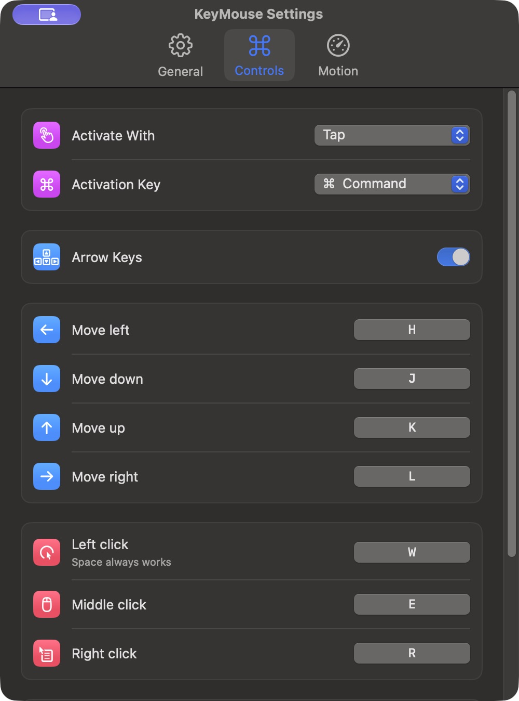
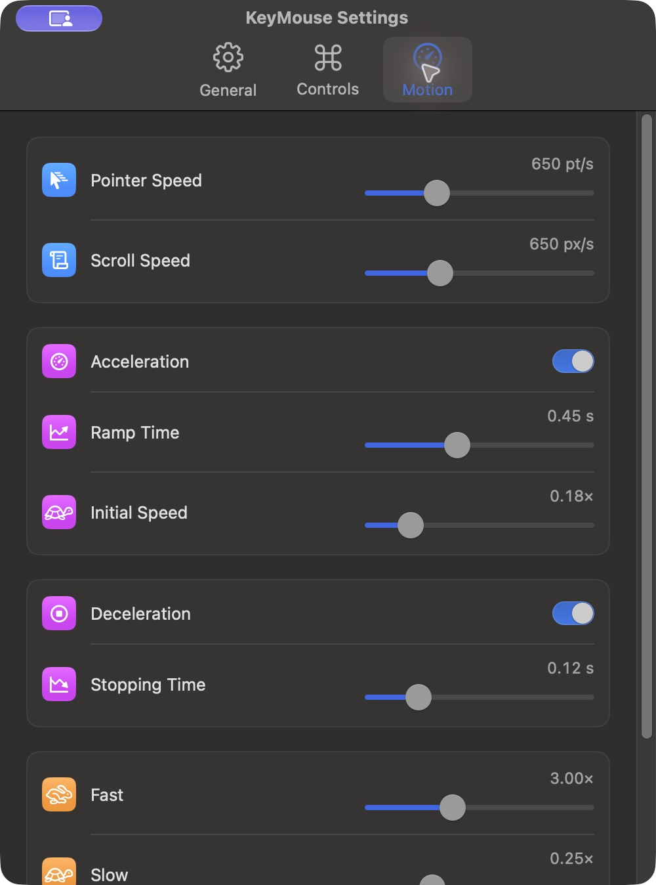

FOR macOS 14 AND LATER
Control your mouse.
From your keyboard.
Move, click, drag, and scroll with your keyboard.


Default controls
Hold a click key while moving to drag. Tap twice to double-click.
- Move
- HJKLor← ↓ ↑ →
- Left click
- SpaceorW
- Middle / right click
- E/R
- Fast / slow
- F/D
- Scroll
- Shift+ movement keys
- Stop
- Esc
Install KeyMouse
Requires macOS 14 or later and Xcode Command Line Tools to build.
01
Build and install
Get the source from GitHub, then run this from the KeyMouse project folder.
./scripts/install-app.sh02
Allow Accessibility access
Open KeyMouse from Applications. Click Allow Access, then enable KeyMouse in System Settings → Privacy & Security → Accessibility.
03
Tap ⌥ Option
Use the keys above to control the pointer. Press Esc to stop. Change your activation key and gesture in Settings.